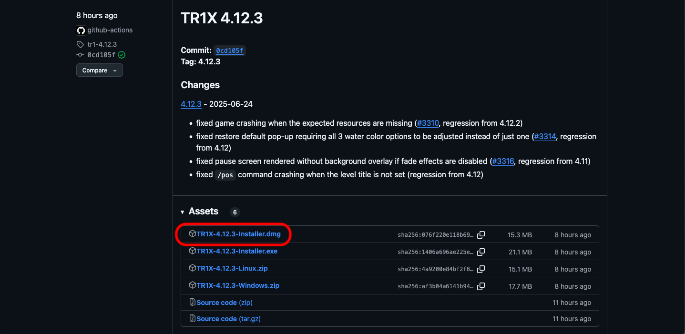
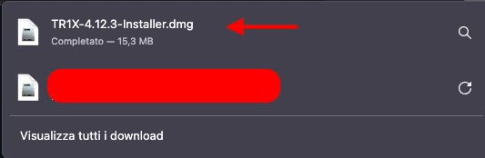
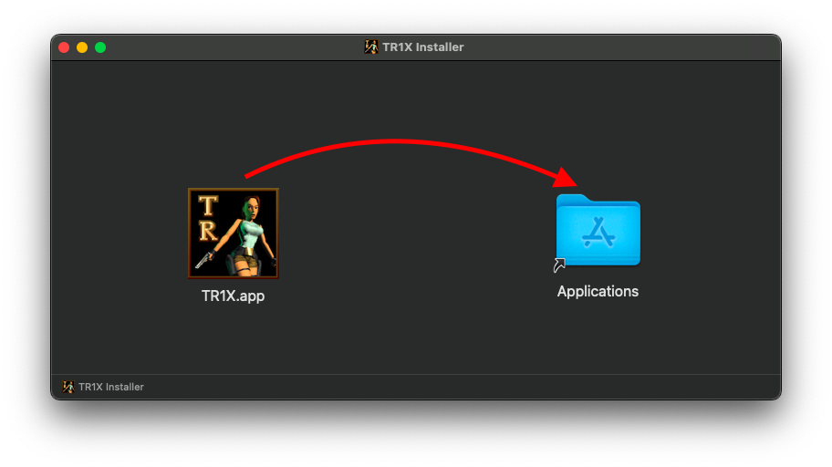
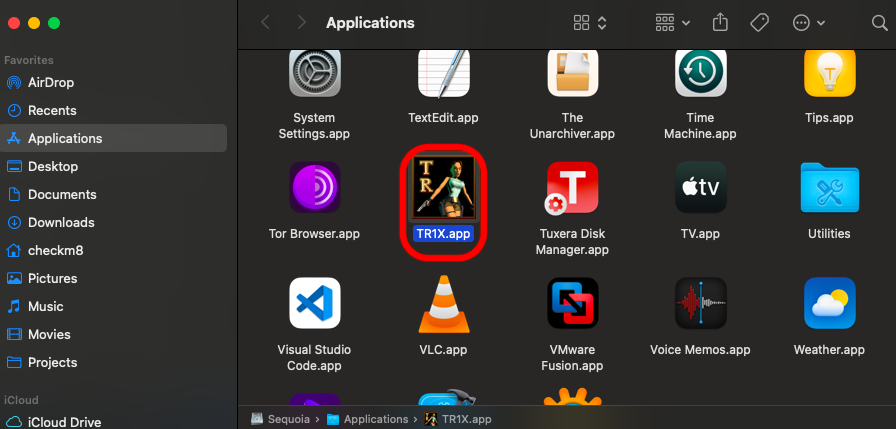
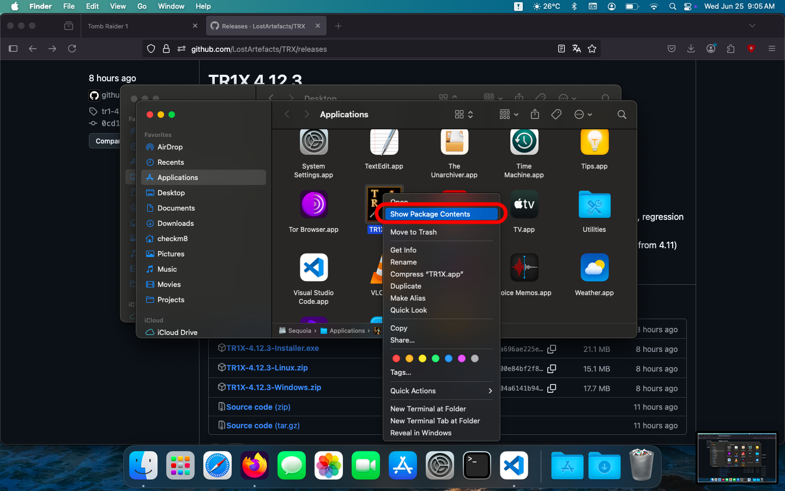
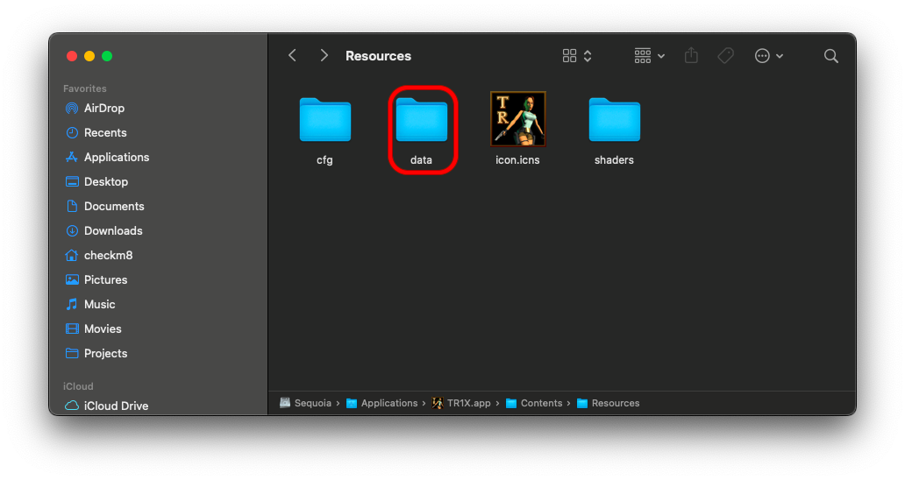
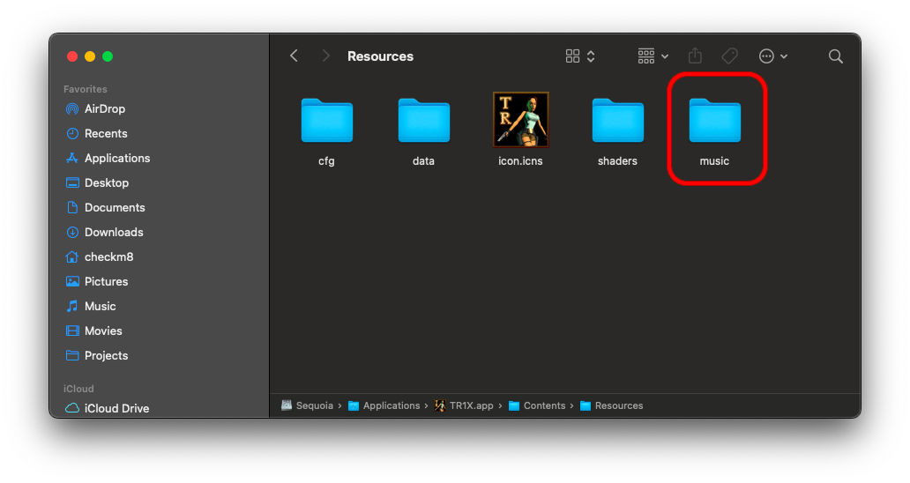

TR1X is an open source implementation of original TR1 engine
It has a lot of features, improvements and is cross platform, so you can play it also on macOS and Linux
See here official repoTo install it, you can run my install tr1x.py script, othewise, go to the repo, to releases and download latest TR1X DMG
 
Mount the DMG and drag TR1X app in Applications
You should see TR1X on the Applications folder

Now right click on TR1X and click Show package contents
Now you have to copy original game files into TR1X, so from a STEAM/GOG/PC copy, copy the data folder into Applications/TR1X.app/Contents/Resources/
Now you have to download music tracks (in English) and (if you want) the Unfinished Business expansion
Download Music Download Unfinished Business (Fan-Made edition with music triggers)
Download Unfinished Business (Fan-Made edition with music triggers)
Extract the downloaded music tracks and copy them into Applications/TR1X.app/Contents/Resources/music
If you decided also to download the UB version, you have just to extract the files from the zip and copy extracted files into data folder
DosBox is a cross platform MS-DOS emulator, can also emulate MS-DOS version of Tomb Raider 1
I don't recommended to use DosBox beacuse the game is low quality and is complicated to run it every time
You will'have to install dosbox staging, with this command: brew install dosbox-staging or you can install also the standalone version
After that, you have to download the original game iso or CD
Then, you have to mount the CD in DosBox, with this command: mount d /Volumes/"Your CD name"/
Then, you have to mount the game folder, with this command: mount c /"Any Path You Want"/ (e.g. /Users/YourUsername/Games/TombRaider1)
Now type c: to switch to the CD directory
Now install TR1 with install.exe
After installed type C: and cd C:\TOMBRAID
Now you can run the game with TR1.exe